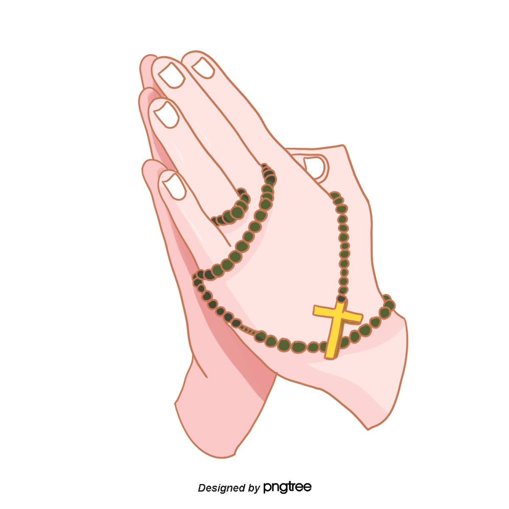
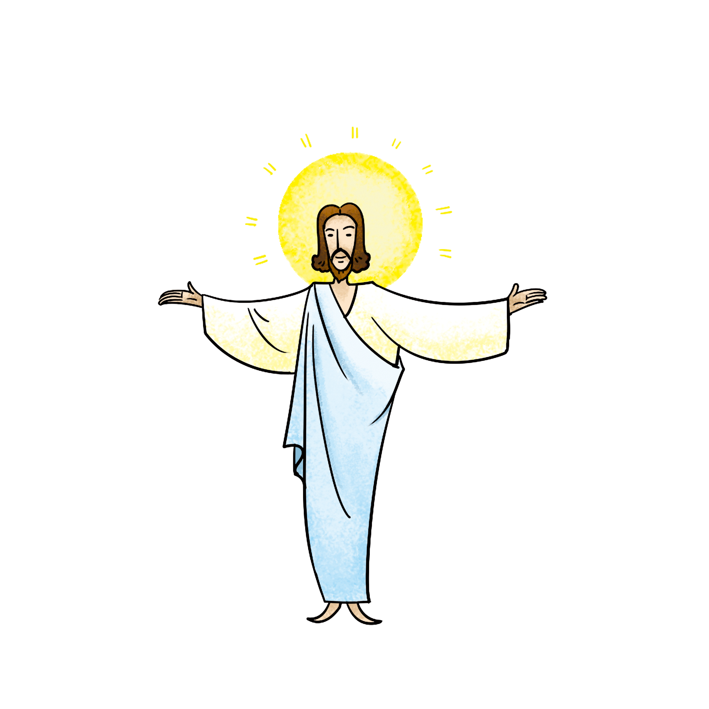

首页
离开
帮助
万圣节
圣诞节
复活节
升天节
受难节
受难节简介
受难节亦称“耶稣受难瞻礼”，是基督教纪念“耶稣受难”的节日。据《新约圣经》载，耶稣于复活前第三天被钉于十字架而死。据此教会称该日在犹太教安息日的前一日，而规定于复活节前的星期五守此节。 [1] 天主教、东正教以及新教圣公会、信义会和其他一些派别都有礼拜仪式。有些地方的不同宗派在这一天联合举行礼拜，以示团结合一。
受难节意义
（good friday)是纪念耶稣受难的节日。《新约全书》记载，耶稣被罗马统治者钉死在耶路撒冷的十字架上。教会称这一天在犹太教安息日的前一天，规定复活节前的星期五为受难节。
在每年的复活节前第五天是耶稣受难日，节日意义是为了纪念耶稣在世时的壮举以及纪念他受难。展现了耶稣对后世的影响以及基督教徒的虔诚。

受难节习俗
圣餐礼，是为纪念耶稣受难日而举行的一种仪式。这个仪式是 耶稣在和门徒们共进最后的晚餐时创立的，当时他已经知道门徒中有人出卖了他。天主教的仪式上还要奉行崇拜十字架的礼仪。该礼仪最早出现在耶路撒冷。十字架先被遮盖，随后逐渐显露，然后被安放在祭坛前，信徒们要对十字架进行跪拜。主祭脱鞋走近十字架，这个过程中要行三次屈膝礼，然后吻十字架。
受难节影响
根据史料记载，仅仅几个月之后，就增添了大约三千跟随者。不到一百年的时间，罗马全境（小亚细亚、欧洲）到处都有人跟随了耶稣。公元325年，跟随耶稣的信仰（基督教）被罗马皇帝君士坦丁确立为官方宗教。500年以后，希腊境内希腊诸神的庙宇也都改造成了教会，成为跟随耶稣的人聚会的场所。虽然耶稣传讲的部分信息在宗教机构扩张的过程中没有受到应有的重视，甚至被人错误地传播，但耶稣的原话以及他的生命本身仍然万古长存。
